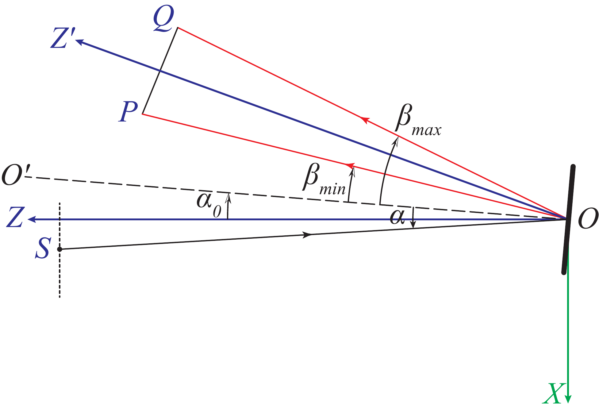

Conventions
This page defines the coordinate system, units, and sign conventions used throughout the app. Understanding these conventions is essential for correctly interpreting and configuring the instrument parameters.
Table of contents
- Coordinate System
- Optic Axes
- Slit Plane and Slits
- Focal Plane
- Angle Conventions
- Units
- Grating Rotation
Coordinate System
PrISM uses a right-handed, Cartesian coordinate system. An origin is defined at the center of the grating, with axes oriented as follows:
- Y axis: Parallel to the rulings on the grating, positive direction is “up” when facing the grating.
- X axis: Perpendicular to the rulings, positive direction is “right” when facing the grating.
- Z axis: Along the optical axis, positive direction is “away from the grating”.
Optic Axes
Two optical axes are defined, as shown in the diagram below:

Collimator Arm
The collimator arm ($\overrightarrow{OZ}$) is the axis along which the collimating optics are positioned. Slits are defined on the slit plane, which is perpendicular to the collimator arm and located at a focal plane. Diverging rays from the slit plane are collimated by the collimator and directed towards the grating.
PrISM assumes a paraxial collimating lens, at some distance from the slit plane and the grating. The collimating lens may be offset from the $\overrightarrow{OZ}$ axis in both $X$ and $Y$, and may be rotated in-plane (around the local $Y$ axis).
Focusing Arm
The focusing arm ($\overrightarrow{OZ’}$) is the axis along which the focusing optics, and the focal plane, are positioned. The focusing arm is defined relative to the collimator arm, with the focal plane located perpendicular to it. The focusing arm is always on the $XZ$ plane.
PrISM assumes a paraxial focusing lens, at some distance from the grating and the focal plane. The focusing lens may be offset from the $\overrightarrow{OZ’}$ axis in both $X’$ and $Y’$, and may be rotated in-plane (around the local $Y’$ axis).
Slit Plane and Slits
The slits are defined on the slit plane, which is perpendicular to the collimator arm ($\overrightarrow{OZ}$) and located at a focal plane. Slits on the slit plane are defined by their center positions, widths and heights in the $X$ and $Y$ directions, respectively.
Focal Plane
The focal plane is always centered on the $\overrightarrow{OZ’}$ axis in the $X’$ direction, but may be offset in the $Y’$ direction.
Angle Conventions
Rotation parameters for the collimator and focusing lens follow the right-hand rule: positive rotation is clockwise when looking along the positive $Z$ or $Z’$ axis towards the grating.
Units
- All linear dimensions (e.g., slit widths, focal lengths, offsets) are in millimeters (mm).
- Grating groove density is in lines per millimeter (lines mm⁻¹).
- Rotation angles are in degrees (°).
- Wavelengths are in Angstroms (Å). Only the straightened images use nanometers (nm).
Grating Rotation
- Gamma (γ) offset: A positive γ offset corresponds to a counter-clockwise rotation of the grating around the $X$ axis, which causes the diffracted light to shift upwards on the focal plane (towards positive $Y’$). A negative γ offset causes a downward shift.
- Alpha (α) offset: A positive α offset corresponds to a counter-clockwise rotation of the grating around the $Y$ axis, which causes the diffracted light to shift towards the $+X’$ direction on the focal plane. A negative α offset causes a shift towards the $-X’$ direction.